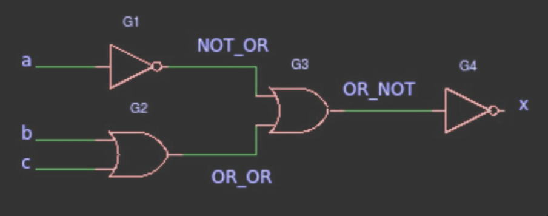
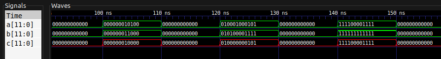
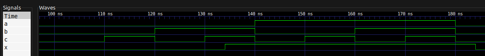

Systemy Wbudowane, Laboratorium
2021-04-01
Na poprzednich laboratoriach przeprowadził(eś|aś) symulację układu, którego opis działania składał się z dwóch wyrażeń boolowskich. Układ był faktycznie połączeniem kilku bramek logicznych — był to typowy układ kombinacyjny, którego każde wyjście można opisać jako jednoznaczną funkcję wejść. Teraz pójdziemy krok dalej — ale będziemy się trzymać podobnego przykładu. Język VHDL pozwala opisać działanie układu na kilka sposobów. Przeczytaj ponownie drugie zdanie w powyższym akapicie. Tam też schowane są dwa różne sposoby opisania tego układu! Jeden to powiedzenie, jaką zależnością są połączone ze sobą wejście i wyjście, a drugie to, z jakich współdziałających komponentów układ się składa.
Na tych laboratoriach
- zobaczysz, jak można komponować układ z podzespołów,
- poznasz działanie pragmy
generic,- oraz przypomnisz sobie, co to jest multiplekser.
Przed uruchomieniem któregokolwiek z programów należy wykonać polecenie
make buildcelem kompilacji wszystkich programów.
Następnie można wykonać polecenia:
make r=‹PROGRAM›żeby po prostu uruchomić dany program, lub
make wave r=‹PROGRAM›żeby pokazać wynik danego programu w programie GTKWave.
Wartość PROGRAM jest jednym z:
example,example_tb,Xand,Xand_tb,ex5,ex5_tb.Pobierz ZIP do tego laboratorium. Przejrzyj kod, zapoznaj się z opisami działania bramek oraz multipleksera.
W pliku lab2-gates.vhd znajduje się definicja czterech bramek logicznych AND, OR, NOT oraz XOR. Oprócz nich znajduje się multiplekser mux z określonym zachowanie-m. Multiplekser na podstawie liczby binarnej otrzymywanej z wejść s0 oraz s1 określa, które z wejść właściwych przekazać do wyjścia multipleksera.
Zapoznaj się z realizacją układu example – sprawdź przebiegi sygnałów, deklaracje komponentów
G1,G2,G3,G4– czy odpowiadają rysunkowi poniżej.
Plik example.vhd zawiera entity example określające takie same wejścia oraz wejście jak na obrazku. W układzie używamy dwie pary bramek NOT oraz OR. Pierwsze osiem linijek architecture układu example odwołuje się właśnie do tych bramek (tworząc nowe instancje przy pomocy klauzuli component).
Następnie deklarujemy sygnały NOT_OR, OR_OR oraz OR_NOT. Na koniec (w ciele właściwym zachowania układu) złączamy wszystko w jedną całość. Wykorzystujemy wcześniej zadeklarowane komponenty bramek OR oraz NOT i mapujemy ich wejścia i wyjścia zgodnie z załączonym obrazkiem.
Przykładowo, na wejściu bramki G2 (OR) mamy sygnały b oraz c. Wyjście przekierowujemy do wewnętrznego sygnału OR_OR. Robimy to przy pomocy klauzuli mapującej:
G2: gateOR port map (b, c, OR_OR);Zajrzyj do
example-tb.vhd. Znajdziesz tam kilka nowości, między innymistd_logic_vector— wektor bitów. Zobacz, jak i gdzie się go używa w tym wypadku.
Wektor bitów działa jak liczba binarna, gdzie liczba cyfr jest taka sama jak długość wektora. W tym przykładzie używamy wektora jako alternatywnej formy wprowadzania danych testowych do testbench-a. Zaczynamy od liczby binarnej równej zeru i w pętli dodajemy jedynkę. Za każdym razem wpinamy bity liczby w sygnały a, b oraz c.
Co do notacji mamy dwie możliwości. Możemy użyć zapisu wektorowego, wówczas musimy za każdą iteracją odpowiednio przekształcać wektor na liczbę, dodać jedynkę i na koniec wrócić do wektora. Alternatywą jest po prostu użycie unsigned co tworzy nam liczbę całkowitą bez znaku.
Wykaż, że układ example realizuje funkcję logiczną zgodnie z rysunkiem.
Żeby łatwiej nam było zrozumieć, co robi ten układ, możemy go nieco skompresować. Bramki G3 oraz G4 możemy zamienić na jedną bramkę NOR. Teraz wiemy, że x jest prawdą, tylko wtedy, kiedy na wejściu G3 mamy same fałsze. Sygnał a jest na wejściu odwracany. Czyli interesują nas tylko te przypadki, w których a jest prawdą. Sygnały b oraz c są „spłaszczane” do jednego przy pomocy bramki OR. Czyli oba te sygnały muszą być fałszem.
Ostatecznie dochodzimy do wniosku, że jedynym układem wejść, w którym x jest prawdą, jest układ a = 1, b = 0, c = 0. W pozostałych przypadkach x jest fałszem.
Tak też się dzieje:
Zajrzyj do pliku
Xand.vhd. Postaw tezę dotyczącą działania pragmygeneric. Zbuduj test, który pomoże Ci zweryfikować, czy masz rację. Deklarując komponent z pragmągeneric, możesz wykorzystać ten szablon:component Xand is generic (width : integer); port ( clk : in std_logic; A,B : in std_logic_vector(width-1 downto 0); C : out std_logic_vector(width-1 downto 0) ); end component; -- ... UUT : Xand generic map (width => 12) port map ( ... );
Pragma generic działa trochę jak typy generyczne w innych językach programowania. Jednak tutaj nie określamy typu abstrakcyjnego będącego w pewnym związku z typem właściwym, a określamy dodatkowy parametr wpływający na parametry właściwe.
W tym przypadku parametr width określa szerokość, długość wektora będącego typem zmiennych właściwych.
Spodziewamy się zwykłej operacji AND na bitach dwóch wektorów. Innymi słowy, operacji bitwise na dwóch liczbach binarnych.
Dla przykładu w testbench-u w pliku Xand_tb.vhd najpierw ładujemy nasz komponent Xand, a następnie wprowadzamy pewne dane testowe.
Wynik:

Jak widać na powyższym obrazku, tam gdzie w obu liczbach a oraz b mamy jedynki, w liczbie wyjściowej c również mamy jedynkę. Jeśli jedna z cyfr liczb wejściowych jest zerem, cyfra liczby wyjściowej również jest zerem.
Bazując na poprzednich zadaniach, zbuduj układ zadany przez prowadzącego.
Przykładowy układ:

W pliku ex5_tb.vhd znajduje się testbench, który sprawdza, czy faktyczne wartości generowane przez układ ex5 zgadzają się z powyższą analizą ręczną.
Zapis z programu GTKWave:
